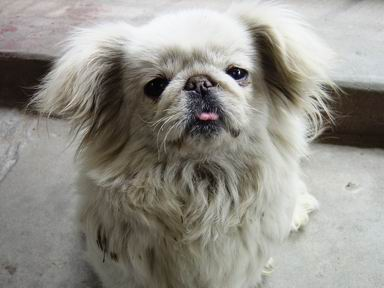
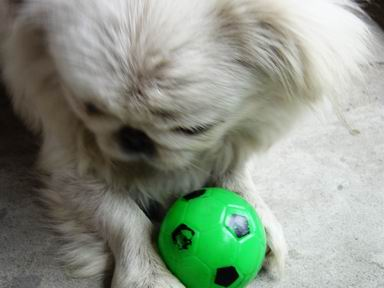
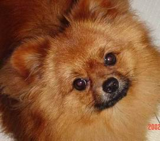

Archives : 2003-05
身体健康的时候，别怠慢了自己的快乐 @ May 30, 2003
办公室比走廊的温度温暖，这个下午有点慵懒的味道，身体的每个细胞都在膨胀。无任何工作情绪，懈怠...懈怠...愉快地懈怠着，等待...等待...不知道等待什么，时间真是可怕的东西，事物在每分每秒的时间里改变，小到细胞大到自然。难怪日本电视连续剧《失乐园》里的男女主人公脆弱超脱到双双自尽于红酒中的爱情毒药。
是的，现在只习惯节奏感规律的旋律，好让心脏顺利跳动在生命的曲谱上。先前文字里谈到健康，要另作一篇。这就得知朋友的前女友查出患了尿毒症，马上就要在日本大学毕业，日本两家公司都有希望聘用她去工作，体检时查出来的。据说7年前她曾吃了治疗青春痘的叫蛇胆.....丸的中药，阶段的吃了半年。日本将各种检查数据传到上海的协和医院，这边的医院告知最好换肾。朋友一直在电话里说：“她受了那么多苦，终于要毕业了，好日子要来了，结果....很惨！老天真不公平，我都想辞职去上海照顾她。”
两个多月前，好久没见的ZI请我吃午饭，他开了车过来接我。不能相信他怎么那么地憔悴，脸色发青，穿着两年前的破西装，牛仔裤上零星冒着小洞洞，和他那辆20多万的车真是不配。苍白纤细的手指夹着燃着的香烟，缓缓道来：“我真没有想到和她结婚六年会走到今天的地步，我们这个家族没有离婚史的，我是头一例。我们分居半年了。她说只要我有空可以打电话给她，她随时过来办理离婚手续。”
“为什么会这样？”我见过他美丽开朗的妻子。“你们吵架吗？”
”不吵，有矛盾总是一方先承认错误就过去。可是后来我们的交流越来越少了...”他夹烟的手指不知是因为营养不良还是因为激动，有些颤抖。“她有次发生宫外孕动了手术，之后半边的卵巢不太好，也切除了，可另一个卵巢也不是很好。我们都希望有个孩子，我们都喜欢孩子....”
“那你可以领养一个啊？国外不能生育的夫妻不是都领养孩子的吗？这不影响你们的感情啊？”
“怎么能领养呢？我不能接受，况且我和她之间现在没有沟通交流，感情上出现问题，不分开每天回到家还是老样子。”他吸了口烟。“去年年底我一个人开车到苏州乐园，把所有刺激惊险的游戏都玩了遍，我的心脏没有多跳快一下，那是生死都与我无关的感受，情绪在水平线之下、负值状态了。”
“你现在离开她，让她这样的身体状况怎么投入到新的婚姻生活中呢？别人知道这种情况谁会有勇气要她呢？”
“那我怎么办？我们分开主要还是感情上有问题，也不吵架大家还是相敬如宾的，可........不是只有她一个人痛苦。我现在什么都不想做，以后也不想结婚了，找人生个孩子......”
我突然很沉重的感悟到：女人，你必须有个健康的身体！都说美满的性爱是婚姻和感情的润滑剂，虽不是人们最先考虑到的因素，但不能否认没有美满和谐的性爱，再好的感情也会摇摇欲坠。那个前女友患了尿毒症的男子，不知道他对那个女人的热情能持续多久？看来爱情和婚姻同样具有现实性。若我是身体有健康问题的当事人，对方越对我好我可能会越痛苦，我们需要的不是同情和怜悯，既然不能继续给对方代来快乐和温情，不如分开永不相见。道义下的责任对爱情是残酷的桎梏！
无论如何，身体健康的时候别怠慢了自己的快乐！
From Sarah With Love @ May 29, 2003
昨晚买了SARAH CONNOR 的新碟《Unbelievable》。
SARAH CONNOR-“From Sarah With Love“
[Verse 1:]
For so many years we were friends
And yes I always knew what we could do
But so many tears in the rain
Felt the night you said
That love had come to you
I thought you were not my kind
I thought that I could never feel for you
The passion and love you were feeling
And so you left
For someone new
And now that you’re far and away
I’m sending a letter today
[Chorus:]
From Sarah with love
She’d got the lover she is dreaming of
She never found the words to say
But I know that today
She’s gonna send her letter to you
From Sarah with love
She took your picture to the stars above
And they told her it is true
She could dare to fall in love with you
So don’t make her blue when she writes to you
From Sarah with love
[Verse 2:]
So maybe the chance for romance
Is like a train to catch before it’s gone
And I’ll keep on waiting and dreaming
You’re strong enough
To understand
As long as you’re so far away
I’m sending a letter each day
[Chorus]
[Last chorus:]
From Sarah with love
She’d got the lover she is dreaming of
She never found the words to say
But I know that today
She’s gonna send her letter to you
From Sarah with love
She’s gotta know what you are thinking of
‘Cause every little now and then
And again and again
I know her heart cries out for you
From Sarah with love
She’d got the lover she is dreaming of
Never found the words to say, ahh
But today, but today…
From Sarah with love
She took your picture to the stars above
And they told her it is true
She could dare to fall in love with you
So don’t make her blue when she writes to you
From Sarah with love
[Coda:]
So don’t make me blue when I write to you
From Sarah with love
改变白衬衫的命运 @ May 28, 2003
本可以睡个懒觉，6点多钟就被父母剁饺馅子的声音吵醒，让人无奈。醒着想今天要做的事情。今天一定要穿那件白衬衫，我要改变那件白衬衫的命运，以前穿它总是不开心的度过一天，所以今天要让它的命运好起来！看到了，命运是可以改变的，不是吗？呵呵~~~~
中山陵 @ May 24, 2003


瞬间 @ May 24, 2003


翘班 @ May 22, 2003
下午翘班去了清凉山公园。听老年人讲那里很久很久以前是个火葬场，山坡上仍然残存着一些坟墓，长眠在坟里的人要笑醒了，他们能睡在那么美那么幽静的公园里那么多年......让活着的人羡慕......

图两张 @ May 21, 2003
—Disney fans

—Men are worse than evil & girls.

让你麻木的嘴说话 @ May 20, 2003
是啊，除了狗还能说点别的吗？下午BESS打电话给你，说你说狗的事情又占用了她十分钟时间...春天里人们是不是会变得慵懒，睡眠也会因为季节而变得长一些或短一些。
认识一个从美国纽约回来的女人，一谈到她自己的工作就神采飞扬，好象谈论她自己的孩子般幸福，想到“工作激情”四个字！又一个自我感觉良好，自我陶醉型的女人，故她的自信充斥着她每一个发音和每一个语意。想起教堂里做礼拜说圣经故事的传教士，想到领袖想到课堂上的老师还有演讲者及一个组织的领头人，要把这类角色下的工作做好，首先必须具备这个女人身上体现出来的特质。你得有语言的魅力和非凡的自信。无论你为之讲演的内容是否是真实的，你都得让人信服、然后人们心甘情愿地跟着你走。你就暗自窃喜或者自鸣得意。
说相同的话N遍之后嘴巴一定是麻木的，你想打110报警。你总在想对方起初的热情和之后的冷淡甚至无所顾及的伤害，到现在往复的热情，究竟是怎么了？这往复的热情令人联想到对方在别处经历“挫折”之后的回光返照？而你只是被需要对象之一，对方的感受才是你们之间唯一的中心。你怎么理解疏远和游离？你自己是个喜欢开严肃玩笑的家伙，但并不好玩。有人不开严肃的玩笑，但同样不好玩！所以，接上面的话讲：你得让人信服、人们心甘情愿地跟着你走，还得有现实的基础和真实的内容。不然你的演讲就是被风吹起来的蒲公英。
从a website of daniel zhou的网页上读到这段：“记得前几天看过一部电影，里面说，有三样东西是金钱不能换来的，孩子的笑容，女孩的青春和好男人的爱情。”这是有关安全感的话题。
琴弦、筷子及大树 @ May 16, 2003
已过午夜，我站在阳台上朝外毫无目的松弛地张望，依稀看见马路上闪烁的霓虹，还有汽车悠然驶过的声音。看不见一个人，即使有灯光和汽车发出的嘈杂声，仍感到莫名的寒意，那感觉就象在黑夜里照镜子，突然不认识镜子中的自己。
刻录光盘巨无聊的同时，还是写点什么吧，哪怕未成型的。这两天和BESS厮混一起吃午饭，尽是日本、韩国料理之类的，BESS说吃得她发昏，书上讲人的智商在吃的太饱的状况下会降低，然而能品出美味应该庆幸，我曾失去了我那宝贵的味觉和食欲。
这里将琴弦、筷子及大树粗略的比喻成三种类型的人。
有人象小提琴上的琴弦，感性而敏感，轻轻一弹，余音未了之感。遇上琴弦般的人就恨自己的手指不灵活，技艺不娴熟，功力不深厚。智慧的人可以让琴弦发出美妙的旋律，反之则弹出的是噪音。
有人象筷子，筷子用一下动一下，筷子弹奏不出美妙的音符，更不可能如琴弦般纤细精致。
也有人象大树，即使风吹过来也纹丝不动，真正是不解风情不知他人冷暖的那类，你把树栽在哪里，它就长在哪里，给它土壤、营养它就满足了。面对这样的人有时就象在种树。
当然你得允许世上有人喜欢弹琴，有人喜欢用筷子，有人喜欢种树。
GRACE的信 @ May 16, 2003
亲爱的S：
这次回南京在百脑汇买了数码相机，就拍了些生活照寄给你，希望你喜欢。
有狗狗的照片是在我妈家，最近闹SARS，宠物不能上街，它十分憋闷，看到我回家，兴奋得又叫又跳，缠着我玩，我索性坐在地上，和它玩个10多分钟。她越来越熟悉我，隔着门分辨得出我的动静，不再乱叫了。妈妈对它的要求很高，如：干净、不乱咬东西、不上沙发、只在报纸上大小便等等，我心想作一只狗也不容易啊。当凯丽达到了这些要求后，妈妈也渐渐接纳了它，产生了感情，甚至把它和我混起来。一次我、杨、妈去超市，出来时，妈招呼我：“凯丽，把油拿上。”又一次，我在其他房间，妈和杨在看电视，当然凯丽也在，放到动物世界时，出现老虎的镜头，凯丽一阵乱叫，妈妈训斥：“GRACE！不要叫！”凯丽居然真的停下了，疑惑地看看她，妈妈也反应过来，回过头不好意思地偷笑。
另外的照片是在同济我和杨租的房子里拍的。有一面墙都是书，我的、杨的，连我妈以前的建筑杂志也有。刚从南京搬来、买书架理好，我常常非常满足地看着这面墙，虽然架上的书大多数没看过，我还是觉得自己很有成就感。我们的房子靠东头，有一面墙上有窗，因为用电脑怕眩光，杨用他从敦隍买的扎染桌布挂上，透过光出现特殊的效果。杨在书架前看书一张，当然是我拍的，杨夸我有进步，因为有背景的意识。
还有一张是我自拍的，也是这台相机的处女作，因为显得我太胖，就处理了一下。


收养的流浪狗PP @ May 10, 2003

—狗狗的小舌头经常露在嘴唇外面,有点嗲哦~~~

~~-把小小的玩具球分给狗狗一个,狗狗玩球很开心的模样，下午等老妈外出之后我和老爸准备帮它洗澡，给狗洗澡比我自己洗澡要累得多！:~~(等狗狗干净漂亮了，再传几张PP上来。
Stay Or Let It Go @ May 10, 2003
Stay Or Let It Go- BRIAN MCKNIGHT
What’s up girl?
I need to talk to you for a minute
I can’t keep playing myself like this
There’s only one thing I wanna know
Should I stay or should I go?
It’s not my fault that you make yourself regret the past
But all I know is, it makes me look bad
When I’m holding your hand and you see your friends you know
And they walk away laughing
Calling me a fool
(But baby I can’t) change the things you did before we met
Even though I didn’t know you
(It’s hard for me to) trust you even more girl, I love you
So tell me what am I to do, yeah
[1] – Don’t know if we will last
Nothing we do can erase the past
Now can you tell me, I don’t know
Should I stay or let it go?
Don’t know if we’re meant to be
And if we should be committed faithfully
But can you tell me, I don’t know
Should I stay or let it go?
I think of the night that I made reservations just for two
But you gave your attention to someone across the room
I should have known right then that things weren’t right
But I couldn’t see it cause love had me so blind
(Tell me how can) I be so secure in loving you
When everybody’s calling me a fool
(I can’t keep holding) on to broken promises from you
And I can’t take no more from you, yeah
[Repeat 1]
Baby time and time again
I try to overlook the pain
And I think of losing all we had together
Girl if it takes me losing you
For happiness in me
I think that I might just have to let you go, oh
Why you playing those games huh?
I don’t see how you’ll do it when I walk out the door
[Repeat 1 till end]
Should I stay, or should I go?
有关友谊和爱情的信任 @ May 09, 2003
刚从好朋友GRACE家回来,晚上聊的话题太多，两个人坐在餐桌前又是几个小时没有离开过。
这里想谈谈信任的话题。可能说不了太多，急着去睡觉，又担心明早写不出什么来。所以，还是晚上辛苦点，哪怕只言片语的......
信任一个人是件不容易的事情，同时也是很简单的事儿。当我们充满信任，我们完全是放松、开放的状态去对对方，展露最柔软的部分，以及真实的自己去面对友谊和爱情，必须是真实的。用我们120%的真心和真情去投入。一旦失望和受伤，在信任的状况下也容易被我们忽略，将问题往好的方面去想，甚至会在心里主动帮对方解释。
然而有一天，当我们发现一直信任的友谊和爱情，在问题积累到一定程度时，信任便象只水晶球跌落在地上，期待由那种发自内心的孤独所替代，有人形容信任的消失如同装在套子里的别里科夫。信任是交往的基础，破碎的信任很难愈合！
流浪狗 @ May 08, 2003
昨晚我家收留了一只流浪狗，一只白色的母狗。据说这只狗前几日的下雨天在车棚里生了只小BABY，可是BABY死了，小狗哭了几天。前天晚上我父母看着它可怜，喂了蛋糕和水，第二天我家正好吃猪蹄汤，我爸爸积了些骨头给它啃。昨天爸爸去买菜，这只小狗就一直跟着去了菜场，怎么撵也不走。晚饭时，爸爸和我说到这件事情，要我去看看，于是我们放下碗筷出去找它。看见它的时候我就挺喜欢的，舌头和嘴都非常小，两只小耳朵象两支小辫子，一副小女孩可怜的模样。我和爸爸不顾我妈的反对（其实妈妈也挺犹豫的），决定收养它，暂时叫它“狗狗”（偶妈妈非要起名叫“嘎嘎”，怪别扭的发音）。
我家小小有时象个土匪，狗狗则乖巧的多，它晚上睡在小小以前用的木头房子里。前天晚上下那么大的雨，狗狗在哪里睡觉的呢？早上和爸爸配合给狗狗喂了一片维生素C，商量着狗狗在坐月子，等天气好了过几天再给它洗澡，然后带到宠物医院检查一下打打针。目前家里不会让狗狗和小小接触，我们也不碰它，需要碰它的时候会带上手套。爸爸说过两天南京就要开始打狗了，这些流浪狗一定都会被打死的。南京十八频道上播放过110打狗的报道，残忍得一塌！！！那些警察怎么下得了手的？还有那些狗主人怎么那么没有人性，说扔掉就扔掉了吗？MD，连怀孕的狗狗也扔掉啊！！！！！！
据说现在给狗上户口已经停止办理。希望狗狗一切平安，在我家听话，这样或许妈妈也就不会反对我们继续收养它！也希望它能在我家顺利度过打狗运动...
我家小小

明天上班 @ May 04, 2003
晚上南京电视台新闻上报道一男子4月30日从北京返回南京的家中，邻居及附近的居民要求该男子去医院检查身体，该男子在自己家中从窗户探出脑袋来为此问题与周围居民争论，大致是说他自己已经做了检查，没有问题等等。可小区内的居民仍然要求他主动去医院，且有人用绳索将该男子家门从外面反锁住（这种做法令人感到惊讶），接到报警的110也到了，该男子总算答应去医院，警方要求其母亲也一起去时，其母不从，结果几个警察就在电视摄像镜头前将该老年女人拖上车一并带走。这让我更加惊讶，但是这是非常时期，大家都应该理解和配合政府工作吧！
说到南京第一例非典病人是某图书发行公司的副总，那个人是我一朋友姐姐的大学同学，据说此人回来后工作会议、还参加什么聚会来着。乘出租车常听司机们讲这个副总从疫区返宁，没有自觉汇报且没有自觉主动的隔离一段时间，这样的人会给行政处分甚至是判刑。哎，写到这里先让我长叹一声...象这样从疫区出差回来的人不要太多，光是我们周围就有，难道要我们对熟悉的朋友同事打举报电话？
中午无意间看到电视上放一部老的电视连续剧《牵手》，以前家人看的时候跟着瞄几眼，是那类多角恋的剧情，当时不是很感兴趣。一直喜欢里面扮演王纯的俞飞鸿，觉得俞飞鸿的眼睛会说话，笑起来的嘴角特别可爱。中午看了一段，看着看着难过起来，剧情的结局和冯小刚的电影《一声叹息》可能是一样的吧？想起《金粉世家》里八妹问金燕西：“既然知道百合花会败的，可为什么当时还要让它开呢？”
非凡人生之弗洛伊德.摇滚-张朝阳 @ May 04, 2003
昨天买了本书，此书名为《非凡人生.名流万象》，是为时尚杂志创刊十周年纪念出版的。想摘选几段在茶上：
张：“我不希望我说出的话是虚妄的，所以，在一句话出口以前，我会问自己，这是不是我心里所想的，它是不是真实的。我是学物理的。研究世界本质的，所以，我不能允许自己有一点点不真实......在美国，我开的是白色丰田跑车，在商店门前急停掉头，是为了买一副墨镜戴上，那时我还梳过马尾。......我学过拉丁舞，但我跳的舞大多数动作是自己发明的。...当时很多中国留学生毕业以后，都到华尔街赚钱去了。’网大的黄沁‘就是。他是赚了钱以后才回国创办网站的。我跟他们不一样，而是留在学校搞研究的。我从学校出来的时候商业互联网刚好出现。这么看来，我好象就是专程在等待互联网的诞生。
问：“你有没有双重性格呢？”
张：“我是不能忍受自己内心的不真实的。我本身不认可双重性格。如果我在一种性格下表现的很好，我不会因此而沾沾自喜的。这说明我的‘病’还没有治好。我就是自己的心理医生，我会时常对自己诊断。有时，我追求真实简直到了残酷的程度。”
问：“怎么分辨真伪呢？”
张：“一般来讲经验很重要。我一直做企业，各种各样的人都有接触，经验自然就比较多，见了面总能估计个八九不离十。其次，要敢于否定自己。有些时候，人的第一印象往往是不准确的，这就需要时间来调整认识。”
“还有，认识人一定不能用表面的标签来辨别，比如财富啊、学历啊，这些都不能代表他们是高贵的。我最厌恶的就是开了‘大奔’就在街上使劲按喇叭的人；有一次，我的皮夹克竟然在飞机上被偷了。按理说，坐飞机的人还能干出这种事么？”
问：“你现在有多少SOHU的股份呢？”
张：“25%。”
问：“你本人SOHU最大的股东？”
张：“是。”
问：“你觉得婚姻是什么？”
张：“婚姻就是向社会公布你们之间唯一的爱情关系，并得到法律的承认。”
问：“现在你喜欢什么样的女孩呢？”
张：“健康、有活力、性感、婀娜多姿。”
问：“那你原先是不是喜欢林黛玉型的呀？”
张：“别猜了。我原先喜欢伶牙利齿、雄辩聪明的那种。不过在国外呆了很多年，审美标准也变了。”
问：“这标准听起来是说给外国女孩听的。”
张：“不是的，外国女孩太粗糙了。我还是喜欢中国人，比较精致。哎呀，你不知道，国外的中国女孩都挺难看的，净是歪瓜裂枣。我就是喜欢纯粹的中国女孩。”
问：“你觉得爱情是怎么产生的呢？”
张：“爱情来自于异性之间的吸引。性爱很重要，它是一种审美，是身体和精神的审美统一。我不相信志同道合。那都是表象。如果两个人很和谐，一切都不是问题。”
问：“你会结婚么？”
张：“会的，不过......”
问：“现代人的难题不是别无选择，而是选择太多？”
张：“没错。如果在一个孤岛上，只有一个女人，我和她好了的话，会很快和她结婚的，不管她是什么人。就是所谓的娶妻生子繁衍后代吧。毕竟，我不仅是消费时代出来的享乐主义者...”
张朝阳正在看米兰.昆德拉的《生命不能承受之轻》。我知道，看这本书需要勇气，因为对任何一个成年人来说，这都是一本沉痛的书。作家对男人人性自身的残酷逼视，让生命的真实变成宿命。令人窒息的无奈。
问：“男人是不是很复杂的动物？”
张：“是吧，其实也有点复杂。”
十佳女性站点评选 @ May 03, 2003
哦?刚刚从From now and then 的网页上看见网易-中国网友报杯”十佳女性站点评选”的连接，偶倒是看了几个MM的网页，但无话可说。我很喜欢danzhu的“From now and then …”,曾经推荐给GOGHS，danzhu的文字有些吸引人的魅力，当然文字代表了思想，且danzhu持之以恒每天都更新，所以我也就习惯每天都去看。生活中已经有太多的虚空，在自己的BLOG世界里沉静下来，让我静静地听，静静地看，静静地想...
俯瞰夜晚的南京城 @ May 01, 2003
上传两张偶拍的照片,照片上有我办公的建筑哦!